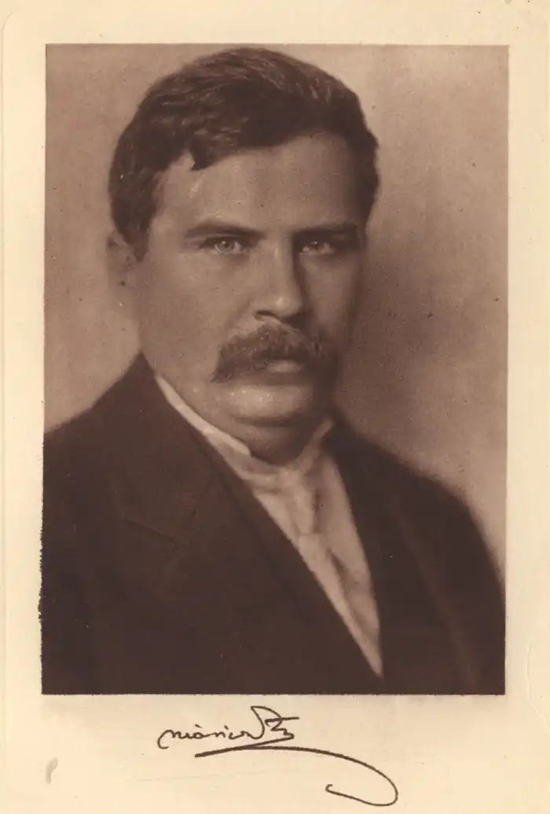

Жигмонд Моріц (1879-1942)
Жигмонд Моріц ... Це ім'я міцно увійшло в скарбницю угорської національної культури і займає в ній почесне місце поряд з іменами полум'яного поета, трибуна революції 1848 року Шандора Петефі, чудового композитора Ференца Ліста, суворого художника-реаліста Міхая Мункачі, видатного скульптора, творця монумента Визволення на горі Геллерт в Будапешті Жигмонда Кішфалуді-Штробль і багатьох інших.
Жигмонд Моріц народився 30 червня 1879 року в невеликому селі Тісачече, на сході Угорщини. Дитинство майбутнього письменника було нелегким, і, як він сам пізніше напише в автобіографічному творі "Роман мого життя", "періоди поневірянь і принижень чергувалися з періодами підйому і щастя". Батько Жигмонда, виходець із селян, прагнув вирватися з убогості, вибитися в заможні люди. Мати, дочка священика, намагалася зберегти "панську закваску". Навчання в реформаторських школах, потім в гімназії тільки посилила загострене сприйняття Моріцем навколишнього його суперечливої дійсності. Після гімназії він вступає до університету, вчиться на різних факультетах — теологічному, юридичному, філософському, але закінчити вищу освіту йому не вдалося — їм опановує пристрасне бажання стати журналістом, письменником, і він почав працювати в газетах і журналах, спочатку — в провінційних, а потім — понад десяти років — в будапештських. На формування поглядів молодого Моріца великий вплив робить знайомство з творчістю, а потім і особиста дружба з найбільшим угорським поетом-ліриком, революційним романтиком Ендре Аді. Натхненна поезія Аді як би відкрила очі Морицу на покликання письменника. Перша новела Жигмонда Моріца, "Сім крейцерів" (1908), що стала чи не найвідомішою з усіх його новел і створена під впливом важких і гірких вражень дитинства, відразу ж принесла йому популярність, поклала початок його творчого шляху. Ця новела, давно вже стала хрестоматійною, розповідає вустами селянського хлопчика про пошуки їм з матір'ю семи крейцерів, щоб купити шматок мила для прання. І ось, коли вже були знайдені шість крейцерів і коли стало очевидним, що сьомого крейцера їм в будинку так і не знайти, якої бракує монетку подає їм ... жебрак. Новела з великою силою малює страшну убогість угорського села того часу. "Сім крейцерів" відкрили Моріца як письменника. Додамо до цього, що вони визначили і спрямованість його творчості — суворий викривальний реалізм. Обмовимося, правда, що перший його роман, "Самородок" ( "Золото в грязі", 1910), ніс на собі відбиток натуралізму, досить поширеного в ті роки в угорській літературі. Однак, незважаючи на натуралістичний наліт, "Самородок" розкриває перед читачем задушливу і жорстоку атмосферу села, задавленою сільським магнатом, — картину, типову для тодішньої Угорщини. Моріц стає професійним письменником, кидає місце "платного журналіста" і, не злякавшися матеріальних труднощів, цілком віддається літературній творчості. Він невпинно працює, пише і пише; одна за одною виходять його новели і повісті, романи і п'єси. Прекрасно знаючи життя своєї країни, яку він об'їздив уздовж і поперек, Моріц ставить в центр своїх творів простих людей, людей з народу, — їм він віддає свої щирі симпатії. Це — селяни, нещадно експлуатовані кулаками і поміщиками, задавлені безпросвітної нуждою, але зберегли високі моральні сили, велику людяність. Письменник влучно назвав сучасну йому Угорщину "країною трьох мільйонів жебраків", тобто трьох мільйонів незаможних, голодних, безправних селян. Малюючи картину міського життя, Моріц з великою реалістичної силою відтворює вузький затхлий маленький світ провінційних угорських міст того часу. Перед читачем проходять яскраві образи чиновників — підлабузників, підлабузників, інтриганів, дрібних шахраїв, великих казнокрадів і ділків. Чи відбувається дія в великому провінційному місті або в глушині, письменник гнівно викриває життя сучасної йому Угорщини. Новела "Бідні люди" (1916) стала однією з кращих антивоєнних новел угорської літератури. Вона проникнута глибокою симпатією письменника до обдурених угорським трудящим, в першу чергу селянам, вимушеним грати роль гарматного м'яса в ім'я зовсім чужих для них інтересів. Перша світова війна, її безглузді криваві втрати викликали у Моріца глибоке обурення. Він сміливо виступає проти її людиноненависницької сутності. Коли в жовтні 1918 року в Угорщині відбулася буржуазно-демократична, а слідом за нею пролетарська революція, Моріц всією душею прийняв їх. Він вірив, що Угорська радянська республіка зможе вирішити нагальні проблеми угорських трудящих і насамперед — селянської бідноти. "Підніміть вище голови все, хто живе в нашій країні, — писав Моріц в" Народній газеті ", вітаючи перемогу пролетарської революції в Угорщині. — Погляньте на небо, вдихніть на повні груди свіже повітря і знайте, що з настанням весни перед вами відкривається новий світ. Ми стали братами, ми стали справжніми братами! Ми стали людьми! Тільки тепер, вперше, ми стали людьми! "Моріц включається до активної громадської діяльності. Навесні 1919 року він бере участь в утворенні перших сільськогосподарських кооперативів і розповідає про це в своїх повних оптимізму репортажах. Падіння Угорської радянської республіки і наступив білий терор означали крах сподівань і надій демократичної інтелігенції Угорщини. Хвиля політичних переслідувань, розв'язаних реакцією, торкнулася і Моріца: його кидають у в'язницю, намагаються зламати його дух. Цей період був для письменника періодом важкого духовної кризи, порятунок від якого він знаходить в роботі, в завзятій, невтомній роботі. Моріц звертається до минулого свого народу, малює картини життя дрібнопомісного угорського дворянства початку нашого століття, пише про дитинство. Однак у всіх цих творах відчувається сучасний підхід письменника до зображуваної дійсності. У них чітко звучить критичний голос Моріца-реаліста, який зумів зв'язати воєдино минуле і сьогодення. В кінці 20-х — початку 30-х років Жигмонд Моріц приділяє все більше часу громадської і журналістської діяльності. З записником в руках він об'їжджає міста і села країни. У нарисах, репортажах і публіцистичних статтях Моріца, як в дзеркалі, відбилися його глибокі роздуми про долю своєї батьківщини, про долю угорських трудівників. На початку 30-х років Моріц створює одне з найзначніших своїх творів — відомий роман "Родичі". Дія цього роману відбувається в провінції, в невеликому місті, який, як і вся Угорщина, б'ється в лихоманці, викликаної наслідками світової економічної кризи. Моріц нещадно викриває корупцію, яка роз'їдає всю країну і охопила панівні класи Угорщини. У "Родичах" письменник-реаліст піднімається до усвідомлення необхідності корінної зміни існуючого в буржуазно-поміщицької Угорщини ладу. "Не прийшла чи так уже пора для настання нової ери? — читаємо ми в романі. — Чи не час змінити все це збіговисько старого світу, яке народилося, щоб керувати, зрослося з владою і безроздільно користується нею? " В останні роки життя Жигмонд Моріц звертається до епічним темам, прагне до філософських узагальнень. Цими рисами відзначені і роман "бетяр" ( "Розбійник", 1937), героєм якого є селянин-бідняк, який збунтувався проти існуючих порядків, і "Роман мого життя" (1939), і двотомний роман про знаменитого угорському бетяр Шандора Рожа (1940— 1942). У цьому своєму останньому творі, задуманнном як трилогія, але незавершеному письменником, Моріц воскрешає події майже столітньої давності, пише про необхідність селянського повстання, виразно проводить паралель із сучасністю, немов бажаючи сказати людям: не можна далі миритися з кошмарної атмосферою, породженої фашизмом. Хортистські влади труїли письменника. Деякі його твори були заборонені. Письменник відчував гостру потребу. Морально надламаний, убитий важкою хворобою, Жигмонд Моріц помер в Будапешті 4 вересня 1942 року. Жигмонд Моріц охоче писав для дітей і про дітей. Відомі його віршовані та прозові казки та жартівливі побрехеньки, адресовані дітям і свідчать не тільки про його любові до наймолодшим читачам, а й про чудовий умінні знайти з ними спільну мову, осягнути їх духовний світ. Це його вміння, тонке розуміння їм дитячої та юнацької менталітету, світовідчуття, особливостей характеру у всій повноті розкрилося в творах Моріца, присвячених юним героям або, точніше кажучи, поставівішіх в центр оповіді дитини ( "Сирітка", 1941) або підлітка ( "Будь чесним завжди ", 1920) [1]. "Будь чесним завжди" — книга, створена Моріцем після падіння Угорської радянської республіки, коли письменник переживав важку кризу, в чем-то автобіографічна. Особливо це відноситься до образу головного героя — гімназиста Михайла Нілаші. Невгамовне бажання юного Михайла "дошукатися до істини", розібратися в цьому суворому і незрозумілому світі дорослих, знайти в ньому своє місце, зуміти зберегти, не дивлячись на всі жорстокі випробування, чисте прагнення до добра і правди, — випробував колись в свої гімназійні роки і сам Моріц. Однак було б неправильним ототожнювати Михайла Нілаші і юного Моріца, ставити знак рівності між їхніми бідами і радощами, повними надій пошуками і розчаруваннями. Точно так же не можна зводити основний зміст роману тільки до опису звичаїв і порядків Дебреценської гімназії. Існує дуже примітна висловлювання самого Жигмонда Моріца, що розкриває ідейну суть книги. "Не страждання учнів Дебреценської колегії описав я, — відзначає Моріц в одному зі своїх листів, — а вистраждане під час Комуни і після неї ... Я став тоді жертвою страшного вихору. Я пройшов через такі наївні і дитячі страждання, що тільки через таїнства дитячого серця я зміг показати те, що відчував, і ось — все це взяли і побачили в романі долю дитини. Людина — вічний дитина і залишається їм навіть із сивою головою ... " "Будь чесним завжди" — одне з найпопулярніших в Угорщині творів Моріца. Тільки в юнацькій бібліотеці воно витримало п'ятнадцять видань, включено в список книг обов'язкового читання для школярів.